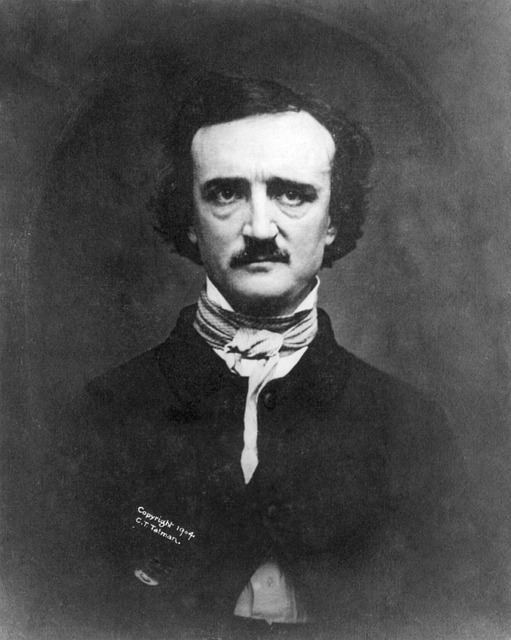
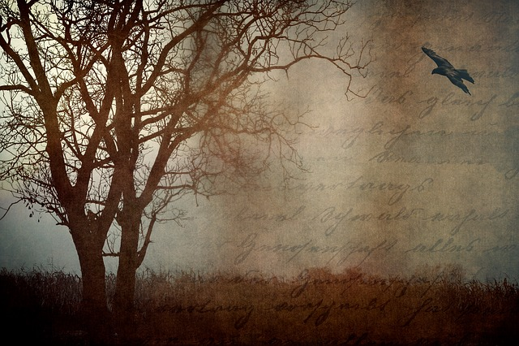
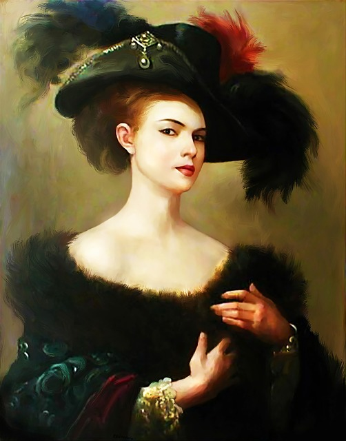
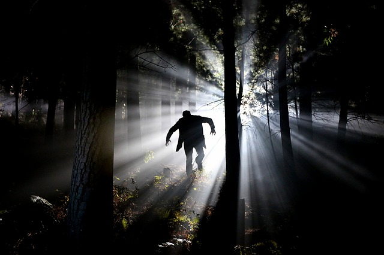

Hover over the image:
Edgar Allan Poe (January 19, 1809 to October 7, 1849) was an American writer, poet, critic and editor best known for evocative short stories and poems that captured the imagination and interest of readers around the world. His imaginative storytelling and tales of mystery and horror gave birth to the modern detective story.
On October 3, 1849, Poe was found delirious on the streets of Baltimore, "in great distress, and... in need of immediate assistance", according to Joseph W. Walker who found him. He was taken to the Washington Medical College where he died on Sunday, October 7, 1849 at 5:00 in the morning. Poe was never coherent long enough to explain how he came to be in his dire condition and, oddly, was wearing clothes that were not his own. He is said to have repeatedly called out the name "Reynolds" on the night before his death, though it is unclear to whom he was referring. Some sources say that Poe's final words were "Lord help my poor soul". All medical records have been lost, including his death certificate.
Many of Poe's works, including The Tell-Tale Heart and The Fall of the House of Usher, became literary classics. Some aspects of Poe's life, like his literature, is shrouded in mystery, and the lines between fact and fiction have been blurred substantially since his death.
Hover over the image:
Edgar Allan Poe's poem The Raven, published in 1845 in the New York Evening Mirror, is considered among the best-known poems in American literature and one of the best of Poe's career. An unknown narrator laments the demise of his great love Lenore and is visited by a raven, who insistently repeats one word: NEVERMORE. In the work, which consists of 18 six-line stanzas, Poe explored some of his common themes - death and loss.
Excerpts from "The Raven"
: Once upon a midnight dreary, while I pondered, weak and weary / Over many a quaint and curious volume of forgotten lore / While I nodded, nearly napping, suddenly there came a tapping / As of some one gently rapping, rapping at my chamber door / "Tis some visitor," I muttered, "tapping at my chamber door/ Only this and nothing more..."
And the Raven, never flitting, still is sitting, still is sitting / On the pallid bust of Pallas just above my chamber door / And his eyes have all the seeming of a demon's that is dreaming / And the lamp-light o'er him streaming throws his shadow on the floor / And my soul from out that shadow that lies floating on the floor / Shall be lifted—nevermore!
Hover over the image:
Mary Shelley was born on August 30, 1797, in London, England. She married poet Percy Bysshe Shelley in 1816.
Two years later, she published her most famous novel, Frankenstein (1818). She wrote several other books, including Valperga (1823), The Last Man (1826), the autobiographical Lodore (1835) and the posthumously published Mathilde.
There is controversy over authorship of Frankenstein, as both Shelley and her husband collaborated on the story. The extent to which Percy Shelley contributed to the novel is unknown. Since Frankenstein was published anonymously in 1818, readers and critics argued over its origins and the contributions of the two Shelleys to the book.
There are differences in the 1818, 1823, and 1831 editions, and Mary Shelley wrote, "I certainly did not owe the suggestion of one incident, nor scarcely of one train of feeling, to my husband, and yet but for his incitement, it would never have taken the form in which it was presented to the world." She wrote that the preface to the first edition was Percy's work "as far as I can recollect."
Shelley died of brain cancer on February 1, 1851, in London, England.
Hover over the image:
Quote from Novel: One man's life or death were but a small price to pay for the acquirement of the knowledge which I sought, for the dominion I should acquire and transmit over the elemental foes of our race. (Letter 4.21)
Quote from Novel: The innocent and helpless creature bestowed on them by heaven, whom to bring up to good, and whose future lot it was in their hands to direct to happiness or misery, according as they fulfilled their duties towards me. (Letter 1.6)
Quote from Novel: "It is with considerable difficulty that I remember the original era of my being; all the events of that period appear confused and indistinct. A strange multiplicity of sensations seized me, and I saw, felt, heard, and smelt at the same time; and it was, indeed, a long time before I learned to distinguish between the operations of my various senses. By degrees, I remember, a stronger light pressed upon my nerves, so that I was obliged to shut my eyes. (11.1)